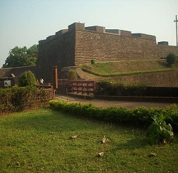
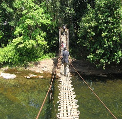
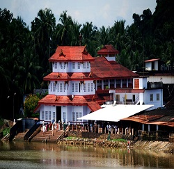

St. Angelo Fort is a fort facing the Arabian Sea, situated 3 km from Kannur, a city in Kerala state, south India.St. Angelo Fort is a fort facing the Arabian Sea, situated 3 km from Kannur, a city in Kerala state, south India.
Read moreAralam Wildlife Sanctuary is the northernmost wildlife sanctuary of Kerala, southwest India. It is 55 km² in area and located on the western slope of the Western Ghats. It was established in 1984. The headquarters of the sanctuary is near Iritty.
Read moreParassinikadavu Muthappan temple is a temple, located at Anthoor Municipality on the banks of the Valapattanam river about 10 km from Taliparamba and 16 km from Kannur City in Kannur District, Kerala.
Read more